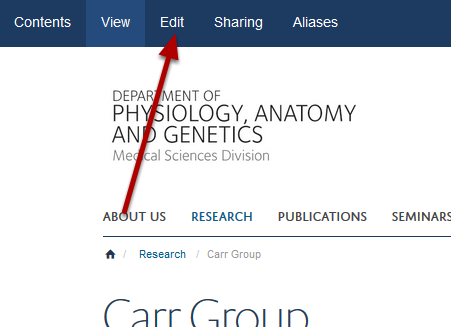
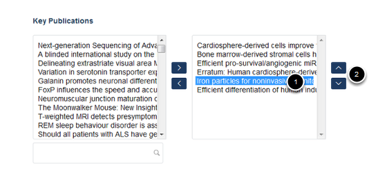

Change the Order of Publications on a Research Group Page¶
Note
These user guides are being phased out and replaced with the guides on Haiku Knowledge Base
You can change the order in which publications are displayed on your Research Group page.
Select edit mode¶
Go to your Research Group page. Click on Edit on the toolbar at the top of the page.
Change order of publications¶
Scroll down the page until you reach the Key Publications section near the bottom of the page. The box on the right shows the publications on your Research Group in display order. To change the order: 1. Highlight the publication you would like to move. 2. Use the up and down arrows to move it to the right location.